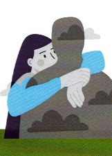
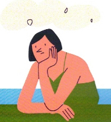
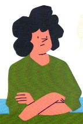

| El tratamiento puede durar entre un año a dieciocho meses. Todas las personas las cuales necesiten de dicho tratamiento deberán cumplir con una serie de pautas y normas a seguir. |
|  | Tareas para llevar una buena rehabilitación |
- PEDIR CONSEJO Y AYUDA en alguna ocasión con terapias individuales y grupales de autoayuda - RECONOCER Y ASUMIR que la adicción es una enfermedas crónica e irreversible y que sin ayuda no prosperará la rehabilitación (SÓLO/A NO SE PUEDE) -ASISTIR ASIDUAMENTE A LAS TERAPIAS, aceptando y cumpliendo las normas establecidas, implicandose en ellas, compartiendo inquietudes, pensamiento, emociones y poniendo en práctica lo aprendido. -MANTENER UNA ABSTINENCIA TOTAL Y ABSOLUTA, llevada con alegría optimismo y esperanza. Nunca verla como un castigo o como un peso a la espalda. -TRABAJAR LA FUERZA DE VOLUNTAD, aprendiendo, asumiendo y practicando el decir "NO quiero". -IDENTIFICAR LAS POSIBLES SITUACIONES DE RIESGO, que nos puedan llevar a un consumo (RECAIDA), seleccionando amistades, evitando los lugares habituales de consumo y modificando hábitos. -NO exigir que el esfuerzo hecho en nuestra rehabilitación sea reconocido de forma explícita. -Valorar los avances positivos de una abstinencia y la rehabilitación. Sentir el apoyo de los familiares. -Identificar y responder a los altibajos emocionales, para aprender a caminar de forma autónoma. (enfado, alegría, tristeza, miedo, rabia, amor...) -Compensar tu rehabilitación impricandote en la ayuda a otras personas enfermas adictas, familiares y/o actividades de la asociacion. -Abandonar el agoismo para que la rehabilitación de la persona adicta, vaya en paralero a la de la familiar. |
|
|  | Secreto de confidencialidad |
-Con el "documento de confidencialidad" que todas las personas firman al llegar, se establece un compromiso y prohibición de no sacar ningún tipo de información de las terapias al exterior, así como la responsabilidad legal de incumplirlas. -Secreto profesional, por parte de los técnicos que trabajan en la asociación. -Secreto de los miembros, (Personas enfermas y familiares) que pertenecen a los grupos de terapia. |
| La base de las TERAPIAS, el absoluto respeto! |  |
-Respeto a todos los miembros y todas las normas. -Tener sinceridad, humildad y honestidad. -Puntualidad. -Pedir y respetar el turno de palabra. -Seguir las indicaciones y recomendaciones de quien coordine la sesión. -No hacer preguntas directas, cada cual compartirá su punto de vista personal del tema en cuestión, sin hacer valoraciones o juicios a personales de segundos o terceras personas. -No se abandonará la terapia ANTES DE TIEMPO de finalización -No usar el móvil. Apagar o poner en silencio. |